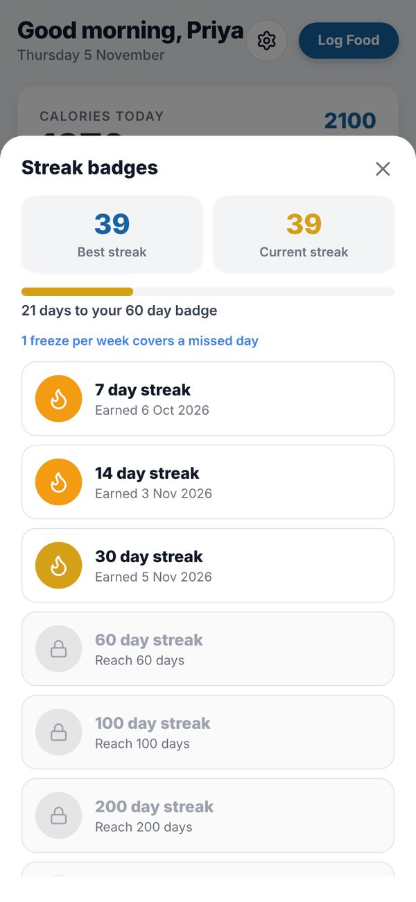

Totality Nutrition guide
Streaks
How your logging streak counts, the weekly freeze, badges, the 7:30pm reminder and milestone emails.
Your streak counts how many days in a row you've logged food. Streaks are on Free, Trial and Paid.
How a day counts#
- A day counts when you log at least one food.
- If you haven't logged yet today, the streak still shows, counted from yesterday, with "Log today to keep your 12 day streak".
- Streak freeze: one missed day per Monday to Sunday week is forgiven, as long as you logged the days either side of it. A frozen day shows a blue snowflake. It doesn't add to your count.
The Logging Streak card on Home shows your streak and the last 7 days. The flame changes colour as your streak grows.
Badges#
Tap the streak card to open Streak badges. It shows your Best streak and Current streak, how many days to your next badge, and every badge: 7, 14, 30, 60, 100, 200 and 365 day streaks. Earned badges show the date you earned them; the rest say "Reach 60 days" and so on.

When you hit a milestone, Tali celebrates with a full screen "7 day streak!" and Keep going.
The 7:30pm reminder#
On your phone, if you have a streak of 2 or more days and haven't logged by 7:30pm, you get a reminder. The app asks for notification permission once you have a streak worth keeping. Turn it off in Settings, Streak reminder at 7:30pm. There's no reminder on the web.
Milestone emails#
When you reach a milestone you also get a celebration email the next morning.
Questions#
I logged yesterday but my streak reset.
Check you didn't miss two days, or two days in the same week. One single missed day a week is forgiven only when both days around it are logged.
Does water or weight count for my streak?
No. Only food logged in your food log.
Do planned meals count?
Yes. Food added from your Meal Plan is in your food log for that day, so it counts.